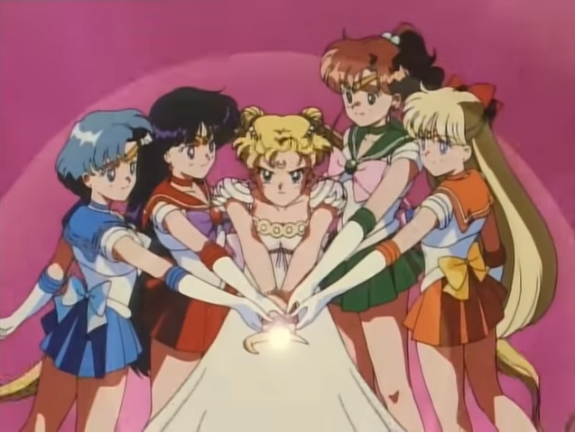
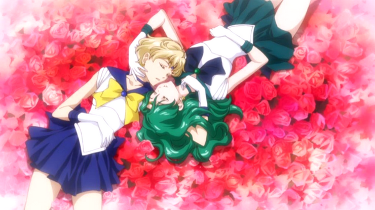

Como muitas das crianças que viveram no ínicio dos anos 90, pude assistir muitos animes e live actions
japoneses na antiga Rede
Manchete.
Na época, Sailor Moon já tinha se tornado meu desenho favorito, mas não conhecia as "divisões" de gênero
entre os
desenhos shoujo
e shounen, de
como era importante lutar como uma garota, ou
do quanto a obra de NAOKO TAKEUCHI me influenciaria para o resto do vida...
Trajetória da Maravilhosa
Nascida em 15 de março de 1967 na cidade de Kofu no Japão, Naoko Takeuchi é mangaká, ilustradora e
letrista. É mãe de um menino e uma menina, ambos frutos do casamento com o também mangaká Yoshihiro Togashi.
Sua carreira artística começou aos 18 anos, mas o que poucas pessoas sabem, é que ela já
tinha interesse em escrever histórias desde o colégio, porém seu pai sugeriu que ela tivesse outra opção
profissional para caso algo não desse certo. Assim, Takeuchi se formou em Química pela Universidade de
Kyoritsu
e se especializou em
ultrassonografia e utilitários médicos.
Em 1985, sua pequena história Yume ja Nai no ne, recebeu o 2º Prêmio
de Mangá Nakayoshi para Novatos. No ano seguinte, começou a trabalhar na Kodansha, uma das principais
editoras do país, e sua história Love Call
ganhou o Prêmio Novo Mangaká Nakayoshi e foi publicada na revista Nakayoshi Deluxe, onde seguiu publicando
pequenas histórias mesmo trabalhando no hospital.
Após publicar a série The Cherry Project, Takeuchi queria criar um mangá com garotas lutadoras. Seu
editor, Fumio Osano, sugeriu
que elas usassem sailor fuku (uniforme de marinheiro) e, assim, surgiu Codename: Sailor V. O sucesso foi
tanto que logo surgiram planos de uma adaptação do mangá para a TV (anime) pela Toei Animation, onde a autora aproveitou a
oportinidade para refazer a série, adicionando outras outras
Sailors Senshi, ampliando o roteiro e alterando o nome para Sailor Moon.
Takeuchi revelou que muitas das obras que escreveu foram baseadas em sua própria vida, várias personagens
levam o nome de seus familiares e usam o uniforme
de marinheiro, ou em seus outros interesses,
como mitologia e
astrologia.
“Eu era muito independente, acho natural que as minhas personagens também compartilhassem minhas
características e eu acho que grande parte da história que criei também reflete minha própria libertação
pessoal.” - Naoko Takeuchi (2013)
Se você qualquer tipo de cultura pop, deve ter notado que equipes
exclusivamente femininas não eram (e ainda não são) comuns. Podia-se mesclar garotos e garotas, mas até os
anos 90, não havia nada como SAILOR MOON.
Além do grupo de ser feminino, cada uma das personagens possui
características, sonhos e poderes próprios, criando um tom de diversidade na série capaz de acolher as
mais diferentes meninas (e meninos) que estivessem acompanhando a história.
Tudo isso, em um roteiro que ensina sua
audiência desde o início que a amizade e o amor entre as mulheres é possível, basta deixar de
acreditar nos padrões socialmente impostos.

Gênero e Sexualidade
Na época, não tinha ideia do quanto era significavo para outras pessoas se verem representadas em
uma mídia animada. E embora não faça parte de nenhuma das siglas que compõem o LGBTQI+, consigo
entender,
o quanto isso importa. Sair do padrão heteronormativo e rejeitar tudo aquilo que nossa
sociedade impõe como o “correto” ou “tradicional”, faz com que as pessoas desse grupo tenham que
enfrentar
muitos
problemas e preconceitos, além de forte opressão por não se adequarem ao que “é esperado”.
Mas isso não acontece em Sailor Moon, Naoko Takeuchi teve o cuidado de inserir heroínas poderosas,
chutadoras de bundas e com muito amor pra dar, cujos relacionamentos não se prendiam ao padrão
heterossexual.

Outros personagens que chamam a atenção são as Sailors Starlights. O trio é formado por guerreiras que se
transformam em homens quando
chegam à Terra em busca da Princesa Kakyuu. Quando Seiya, Taiki e Yaten usam seus poderes para se
transformar é possível ver seus corpos masculinos se transformando em femininos, tornando-se uma espécie
de símbolo para as pessoas transsexuais.
E não são apenas as heroínas, em Sailor Moon também existem alguns vilões que pertencem ao grupo, Kunzite
e Zoisite, generais da Rainha Beryl, são claramente homossexuais. Se
aqui Naoko Taukeuchi corria o risco de cair no clássico perfil dos “gays malvados”, isso não ocorre pelo
simples fato de que o amor que une ambos personagens é o mesmo que os humaniza. Outro vilão nessa
categoria é o Fish Eye (Olho de Peixe), desenhado como homem, poderia até mesmo entrar na categoria
crossdresser, já que é possível vê-lo se vestindo com roupas
femininas e usando
maquiagem, ele não
sente a menor
vergonha de ser quem é e
demonstra isso por meio de suas falas e
ações, sem perder dois segundos do dia pensando sobre o que os
outros vão achar.
Lute Como Uma Garota
O nível de diversidade de gênero e sororidade em Sailor Moon é sem dúvida uma das explicações de tanto
sucesso, além disso, o roteiro trás consigo uma mensagem revolucionária de forma simples e direta:
as meninas
podem ser o que quisessem, independente
de quem ou do que sejam, seu futuro é seu, e você deve fazer o que quiser com ele...